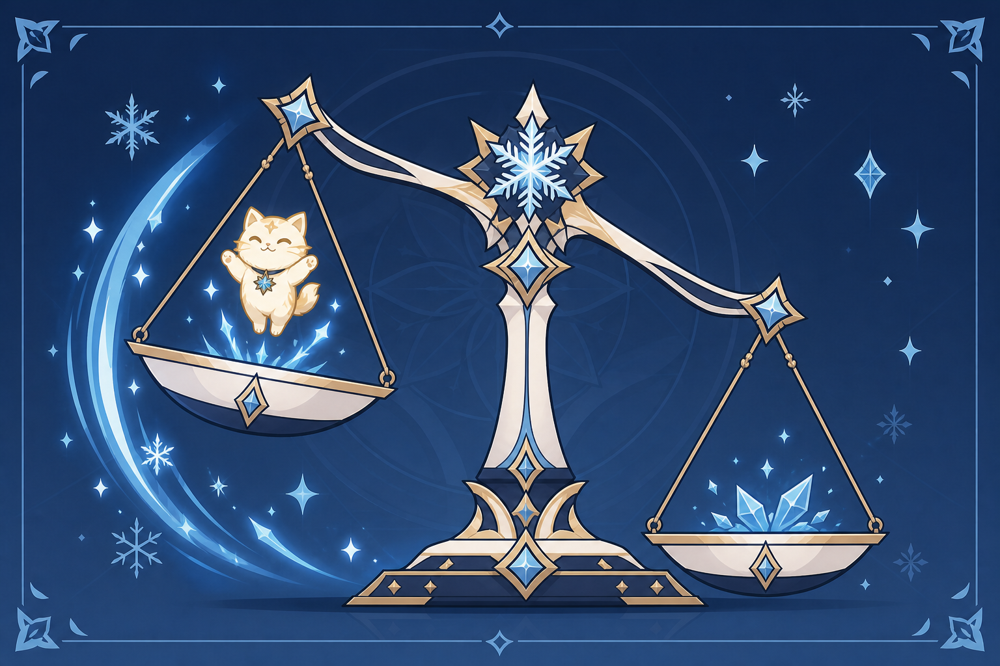
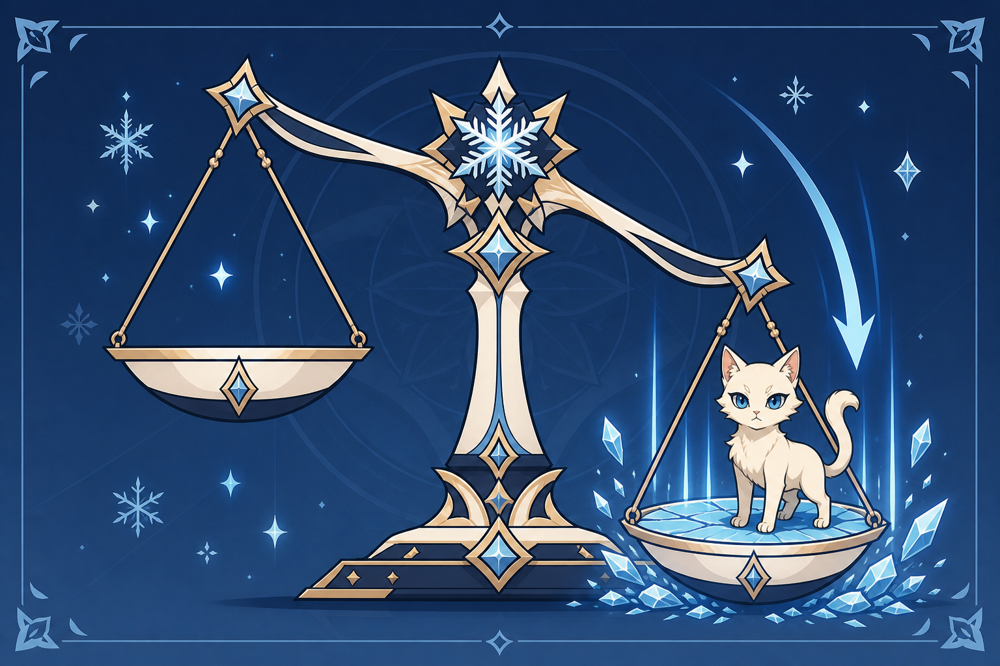
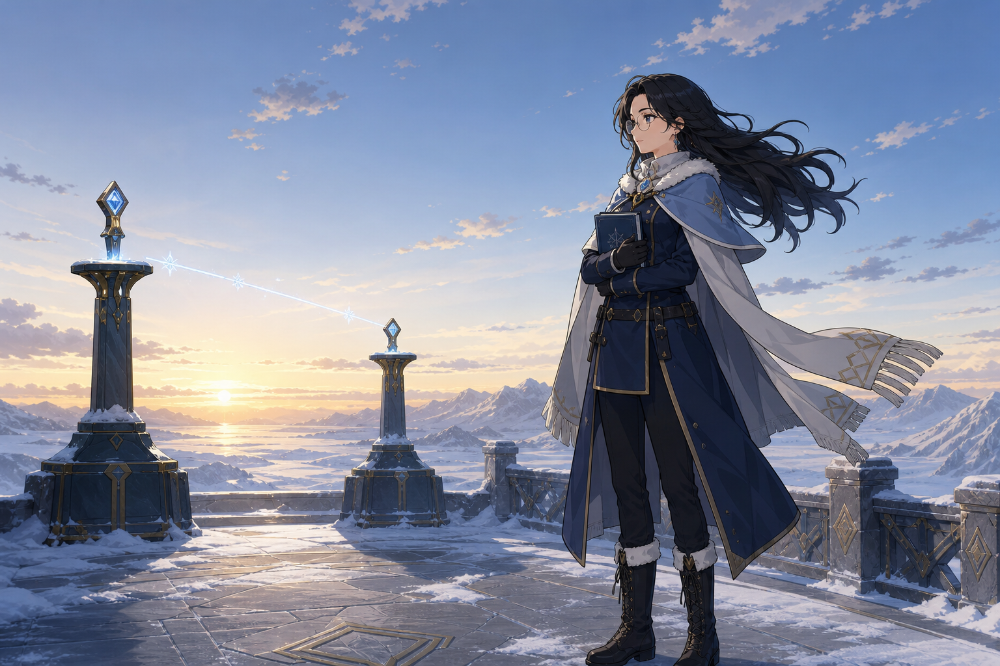
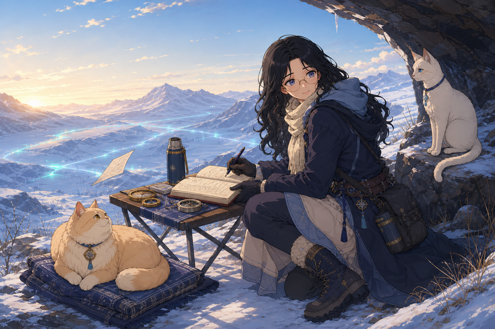

01 / 角色
两衡之间
至冬 · 冰 · 法器
01 / 开场记录
娜蒂娅·萨多娃
在雪原上记录无法被称量之物的人，也在不知不觉间成为了记录中的第三个对象。
01角色封面二十四张横向记录，沿着她、两只猫与一枚衡标，读完一段从异常走向共生的故事。点击卡片，查看背面的记录。
从名字与第一眼开始，认识这个总在测量的人。
至冬 · 冰 · 法器
在雪原上记录无法被称量之物的人，也在不知不觉间成为了记录中的第三个对象。
01角色封面至冬 · 冰 · 法器
五星冰元素法器角色。身份是民间异常现象记录员、野外调查研究者。定位：后台辅助 / 控场。
02基础信息
温柔知性，专业可靠，偶尔天然呆。
面对最违反常识的事情，她的第一反应通常不是惊叫，而是把眼镜推回去，再测一次。
03性格记录
悬浮、倾斜、归衡，都是可读的状态。
圆框眼镜替她看见细微的偏差，冰蓝测量环替她记下风与重量；普莎与伊嘉一轻一重，把看不见的变化带到眼前。
04观测一只被风托起，一只让薄冰下沉；而她站在它们之间。

一只向上，一只向下。
它们是真实的家猫，不是使魔，也不是元素生命。只是和地面、空气及彼此的锚定方式发生了改变。
05关系总览
圆润、奶油金、琥珀眼。
它像一团有分量的绒毛，实际上可能被风慢慢带走。长命锁与安全牵引绳，是为了防止它飘离地面。
06普莎
修长、象牙色、冰蓝眼。
它走路依旧轻巧，却会让薄冰细裂、木板下陷。炭灰蓝项圈比外观可靠得多。
07伊嘉
她并不是旁观者。
“重”不是猫的真实质量，“轻”也不是失去身体，而是锚定关系在接触和测量时表现出的负荷。
08三体关系衡标每偏移一格，雪原就会用另一种方式回应。

-2 · -1 · 0 · +1 · +2
元素战技启动时 H = 0。反应把它推向轻端或重端；再次施放战技与爆发都能主动回中。
09机制总览
浮动、牵引、多目标。
触发 Stellar Swirl 时，衡标向轻端移动。普莎缓缓离地，雪粒反常地向上飘动，为战场带来牵引与浮动。
10轻相
压制、迟滞、单目标。
触发 Stellar-Conduct 时，衡标向重端移动。伊嘉落地，造成低沉冰裂，为战场带来迟滞与稳定压制。
11重相轻与重不互相抵消。
再次施放战技或施放爆发，可以让衡标主动回到中央。轻与重的轨迹交汇，共同稳定战场。
12归衡
记录册打开，同行者入场。
技能本身提供稳定的后台冰元素协同；Stellar 反应负责选择轻端或重端路线，不是让技能开始工作的前提。
13E / 战技轻中有重，重中有轻。
爆发先让衡标回到中央，再建立零点测区。触发一种路线时，另一只猫也会提供较弱的伴随响应。
14Q / 爆发不是永远停在某一边。
连续同类反应会稳定对应的端点观测；把衡标从端点带回中央，则让归衡响应得到强化。
15天赋从事故留下的裂痕，到她决定如何继续生活。

她把自己写成观察者。
暴风雪中的设施重新启动，所有仪器同时归零。醒来以后，两只猫仍然健康，却不再受到同一种方式的锚定。
16故事
比承诺更重。
一只猫被暴风送上屋顶，另一只猫让旧木板发出危险的呻吟。旅行者随她回到重新运行的旧设施。
17任务日志
拒绝强制复原。
当系统试图把它们校准成事故以前的样子，她选择稳定现在的三者，而不是把生活退回过去。
18剧情结论
只是决定从哪里开始记录。
书页灰白，边缘有冰蓝元素纹。攻击时，测量环展开，页面自行翻动，刻度在空气中形成冰晶坐标。
19法器
只靠看，永远猜不准。
盘子两侧分别放着圆形和细长的小点心，外观与实际的蓬松度、重量恰好相反。
20料理远处传来一声猫叫。
“这个我还没有证据。”
“记录，并不是为了证明自己最开始是对的。”
我们三个都在这里。
六条命之座逐步强化轻端、重端、归衡与零点测区，最后把剧情结论写进机制：三者都在这里。
22命之座她们三个都在这里。
她没有把一切变回过去。她想弄明白，怎样才能让已经改变的一切继续稳定地走向未来。
23结语
一份可以继续写下去的记录。
这不是对过去的修复报告，而是一份关于三名同行者如何共同生活的持续观察。
24收束卡